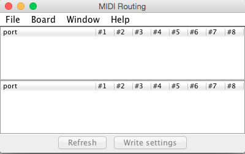
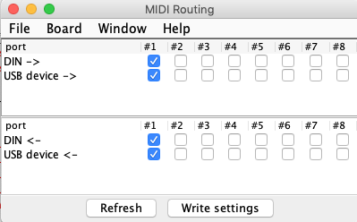

I have installed the 2.0 editor on OSX 10.10.5 and it works.
I have not yet updated the board itself and tried connecting, though.

I have installed the 2.0 editor on OSX 10.10.5 and it works.
I have not yet updated the board itself and tried connecting, though.
BTW. if I update my board to 2.0 it will still be possible to revert back to 1.0.12, right?
Yes, either use "board->firmware->Flash downgrade to 1.0.12" in Axoloti 2.0, or use "board->firmware->Flash (rescue)" in 1.0.12.
About the error "Axoloti - entrypoint not found":
Could you try renaming C:\Program Files (x86)\Axoloti into C:\Program Files (x86)\Axoloti1,
reboot,
and run the axoloti-win-2.0.0.msi installer again?
Not sure it will solve anything, so far I haven't been able to reproduce this error.
Built from a clean source checkout on Linux. Firmware update was detected and proceeded without issue. I didn't have to manually rescue or do anything special. Everything came up just fine after that. Libraries were all fetched normally. I haven't noticed any major issues yet.
Got this going on windows make sure to rename your existing axo folder it doesn't like being installed over the top you can use the installer for gcc 7-2018-q2 win32 but you might need to restart your pc to update parth.
@johannes "MIDI i/o on gpio does not work anymore" so i assume the way to get the axo talking to another mcu using serial midi now would be to use pads on bridge between the main board and the midi power section? i assume this change is due to the new midi routing system so the feature won't return?
Today I updated the Axoloti bord firmware to 2.0.
But when I try to go live with a patch, I get this error. I am assuming it is related to use of tables?
Generate code complete
compiling /Users/jakobskouborg/Documents/axoloti-2.0.0/build/xpatch.cpp
/Users/jakobskouborg/Documents/axoloti-2.0.0/build/xpatch.cpp: In member function 'int rootc::instanceTable::instanceAudio::table_load()':
/Users/jakobskouborg/Documents/axoloti-2.0.0/build/xpatch.cpp:334:33: error: 'fbuff' was not declared in this scope
if( rem_sz > sizeof(fbuff) )
^~~~~
/Users/jakobskouborg/Documents/axoloti-2.0.0/build/xpatch.cpp: In member function 'void rootc::instanceTable::instanceAudio::dsp(rootc::instanceTable*, int32_t, bool, int32_t&, int32_t&, int32_t&, int32_t&, char*&, int32_t&)':
/Users/jakobskouborg/Documents/axoloti-2.0.0/build/xpatch.cpp:495:15: error: 'codec_clearbuffer' was not declared in this scope
codec_clearbuffer();
^~~~~~~~~~~~~~~~~
make: *** [/Users/jakobskouborg/Documents/axoloti-2.0.0/build/xpatch.o] Error 1
Compiling patch failed
What do I need to do to fix this issue?
Also experiencing some issue when using the midi/out/clock. If you set a tempo and turn the midi clock on, you get this error in the console:
It just keeps spitting out that message, "midi output overflow" until I go un-live again. Not sure if it's a big issue, the patch seems to work. I have not tried sending the midi clock out to another device, so not sure if it actually affects the midi clock out.
PS. If admin wants to move the trouble shooting posts I just made to another thread, I am fine with that 
i think we will need to see the patch ...
ideally you say which (factory) object is causing it.
have you setup the output port to a device?
is that device working? e.g. with note on/off...
at a, completely, random guess id say the output device is not pulling the clock messages off the midi queue.
(the overflow message means for some reason the patch is creating midi message faster than they are being consumed)
btw: after some initially playing I will stay there are a number of things that have changed that are not listed,
so you may find custom objects may not work...particularly ones that work at the lower levels of the firmware.
(e.g. my push object no longer works as ui.h no longer exists/or is inaccessible ... i also don't know at this stage if the parameter representation in firmware has changed...so would need updating to reflect this)
so I guess we should re-iterate :
and also there are some really big changes under the covers, that may have impact on things
Here is a simplification of it. Problem is still there, so it is for sure related to table use:
Tets new Axo 2 .axp (15.1 KB)
(You have to save the table combo object as an object. It's based on table/alloc 16b sdram, so it needs to be saved).
These are not factory objects, they are embedded and edited objects. Pretty much every patch I make uses embedded/edited objects.
I was just hoping that maybe I could change a line or two of code to get it working 
Check the picture for the settings I made. I also checked the midi routing, but it seems like I can't do anything in there. I can't do any settings.

Ah yes of course. I just want to tell what I am experiencing here, maybe it can be used for troubleshooting.
I am not complaining, just letting you guys know, who knows what to do about it
I still have another bord I run the old version on
hmm, that refresh button should be available ... and when you press it, you should get the device populated
without anything plugged into usb, this is what I see

unfortunately, when I write the routing table i get an exception...
Firmware version: 2.0.0.0, crc=0xCDEEEFDA
exception report:
pc=0x2FE528
psr=0x21000000
lr=0x801ABBF
r12=0x0
cfsr=0x100
and routing appears to fail, as the clock produces the overflow...
(but as stated, Id half expect that if there are no devices consuming)
GitHub issue reported :
sorry, I dont have time to look at custom objects at the moment.
if you have based it off something else, what I would recommend is going back and looking at what you derived it from in the factory, and see what has changed there.
the error you showed , looks like an API change... which is what Ive noticed as well.
(really not surprising given how much has changed in 2.0!)
btw: we probably should raise issues on GitHub for bugs found...
so raise a GitHub issue (assuming its not already been reported) and report here, so others know the status
My bad. Usb cable was moved a little bit out of the connector. When I pushed it in again, it showed the refresh setting. Sorry bout that, I didn't notice it before now, after a walk
Yeah I was just thinking that after my walk, that I could compare old/new objects and see what's different.
Yeah I understand. I will do that from now on
Hi. I'm trying to reflash my firmware back to 1.0.12.
I open the axo 1.0.12 application. It says there is a firmware mismatch and wants to reflash. I click ok. It says to wait until the led stops blinking and is steady green. BUT: it is immediately green and nothing happens... I waiting 15 minutes... tried to connect, and still doesn't work, wants to reflash again.
EDIT: it works with downgrading from the 2.0.0 app. All good.
...so does this mean we can load patches at runtime,while the 'master patch' keeps running?
...isn't this ,technically,pretty close to 'live patching'?
Yup
Think still a few steps off
Assuming , by live patching we mean that’s the editor view is ‘live’ ie the patch is compiled / rebuilt on the background and updated on the board - in a similar way to say PD/Max.
...exactly!
sounds exciting!
I don't have the time right now to check out all of this,hopefully soon..
cheers
R
ok, Ive determine the issue with setting up midi routings 'crashing'
it needs a directory on the SDcard called 'settings', once you create this it works fine.
so for a workaround just create this directory in the root of your sdcard.
( @jaffasplaffa, once ive got the routing set up , midi/out/clock works fine)
been testing axoloti 2.0 with thonk axo control which has a quite a bit of GPIO.
Im seeing issues with pots 4 and 5, everything else works (adcvalues[2], [3])
raised issue:
{kind=link}
{kind=link}